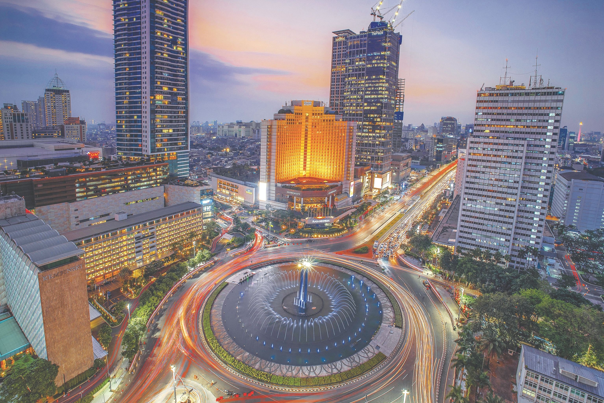

┃ Keunikan Daerah Asal
Ibu Kota Jakarta: Akulturasi Budaya & Pusat Peradaban Modern
Lahir dan dibesarkan di Jakarta membentuk cara pandang saya menjadi pribadi yang dinamis, adaptif, dan menghargai keberagaman. Sebagai kota metropolitan yang menjadi titik temu berbagai suku bangsa di Indonesia, Jakarta memiliki keunikan budaya Betawi yang sangat khas—mulai dari seni pertunjukan Ondel-ondel yang meriah, tradisi Palang Pintu yang sarat akan nilai kedisiplinan dan beladiri, hingga kuliner legendaris seperti Kerak Telor.
Perspektif keberagaman dan kecepatan ritme hidup di Jakarta ini saya bawa ke dalam ranah pendidikan olahraga. Saya melihat bahwa olahraga di daerah urban bukan sekadar aktivitas fisik, melainkan media strategis untuk menyatukan perbedaan, membangun kerja sama tim antar-siswa dari berbagai latar belakang, serta menanamkan mentalitas pemenang yang tangguh dan sportif.
